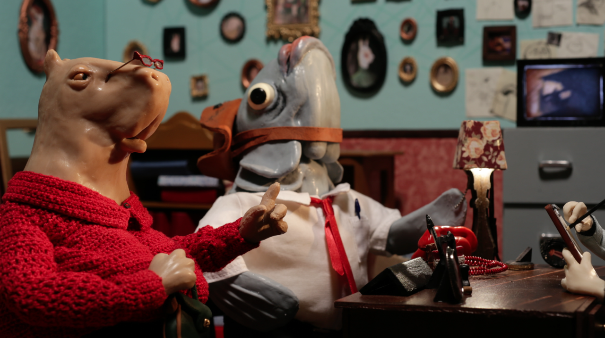

INDESCRITÍVEL é um curta-metragem sobre as intricadas mensagens que nunca chegam na conversa social. Bianca é uma coelha retratista que confunde a descrição dos fatos com as memórias obtusas de um Brasil dividido.

A caption for the above image.*..Entre a ficção e a realidade, o ponto de vista da coelha materializa-se através da sua própria visão dos fatos, demonstrando sua retórica detetivesca no escuro da sua sala, iluminada apenas pela teia que se faz revelar sob a luz negra, que mancha seus desenhos na parede. Cúmplice, o curta-metragem vai explorar a estética de um barroco chiaroscuro, da luz e sombra duras dos postes sujos da cidade e da angulação estilizada de câmera para criar uma atmosfera de referência ao film noir clássico dos anos 40 e 50.
Samuel Mariani is an ANIMATOR, EDITOR AND FILM RESEARCHER. He holds a bachelor degree in Media Studies at the State University of Campinas, where he was awarded for his research on Humour, Deconstructivism and Film Studies. He is the director of Flirt (2015 - HAFF, Images Film Festival official selections), the editor and DOP of Flesh (2019 - Locarno, TIFF, IDFA, DOK Leipzig selections; 85 awards worldwide), assistant director and assistant editor of the stop-motion feature Bob Spit - We Don't Like People (2021 - Annecy Contrechamp award) at Coala Films, where he also heads the implementation and development of motion control technology. Samuel is also an active member of the animation community in Brazil. He is an animation critic at the Cine Festivais online portal, he has edited and animated for the past three editions of the Brazilian International Animation Day exhibitions, and he co-founded and directs the The Extraordinary Week of Animated Festivals (LESMA), in Campinas.
CV LINK
USEFUL LINKS
Painel Audiovisual
solucoes para stop-motion: motion-control
LESMA
Escrita de animacao junto ao Cinefestivais
Oficinas de animacao junto ao NCA
links uteis: MUAN no animador caipira
in other news
cine-diário de projetos
projetos de arduíno / python para stop-motion, seus usos, exemplos
Antes que me esqueça: python para encontrar falas de documentário, experiência com ATK, Bob, Carne
Animator, editor and film researcher based in São Paulo, Brazil. Worked as editor and DOP for the short Flesh (2019 - Locarno, TIFF, OIAF, Annecy), as assistant editor and animatic editor for the feature Bob Spit: We Do Not Like People (Annecy Contrechamp award, OIAF 2021) and was lead editor and stop motion animator of the second season of the TV series Angeli The Killer (Canal Brasil, 2021). Samuel also co-founded and directs the Brazilian Extraordinary Week of Animated Festivals (LESMA) in Campinas and teaches animation for elementary-level students at Carlitos School and at AnimaMundi Festival in São Paulo.
Amazing work come from beyond your expectations, thinking like a camera or any tool will limit you to it's proprieties. Tools are complete, humans no.
contact me for edits, animations, friendship samuelbmariani@gmail.com